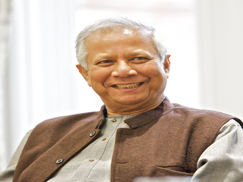

Bangladesh 2.0

The Vision of Future
Bangladesh 2.0 aims to redefine the nation’s trajectory by embracing cutting-edge technology, promoting inclusive growth, and ensuring sustainability. With initiatives in renewable energy, digital transformation, and robust infrastructure, the country is set to become a global model of development.
Digital Transformation
Creating a nationwide digital ecosystem to enhance connectivity and access to services for all citizens.
Green Energy
Investments in solar and wind energy to ensure a sustainable and eco-friendly future.
Modern Infrastructure
Building state-of-the-art infrastructure to support economic growth and global competitiveness.
Recent News
Bangladesh 2.0 aims to redefine the nation’s trajectory by embracing cutting-edge technology, promoting inclusive growth, and ensuring sustainability. With initiatives in renewable energy, digital transformation, and robust infrastructure, the country is set to become a global model of development.

Bangladesh Launches New Satellite

Not until the creation and maintenance of decent conditions of life for all people are recognized and accepted as a common obligation of all people and all countries—not until then shall we, with a certain degree of justification, be able to speak of humankind as civilized
Muhammad Yunus returns to Bangladesh to lead interim government
Nobel Peace Prize-winning economist Muhammad Yunus has returned to Bangladesh to head an interim government after weeks of student-led protests forced Prime Minister Sheikh Hasina to resign and flee to India.

Donate Today
Bangladesh 2.0 aims to redefine the nation’s trajectory by embracing cutting-edge technology, promoting inclusive growth, and ensuring sustainability. With initiatives in renewable energy, digital transformation, and robust infrastructure.
"Human beings are born with limitless potential, creativity, and imagination. A job is too small a space to contain the vastness of our abilities. The traditional idea of employment restricts innovation, as we focus on fulfilling someone else's vision rather than our own. I believe we are all entrepreneurs at heart, capable of solving problems, building businesses, and transforming the world around us. We don’t have to wait for others to create opportunities for us. Instead, we must unlock our potential, think differently, and create opportunities for ourselves and others. That’s how real change happens."
Dr. Muhammad Yunus
Chief Adviser of the People's Republic of Bangladesh